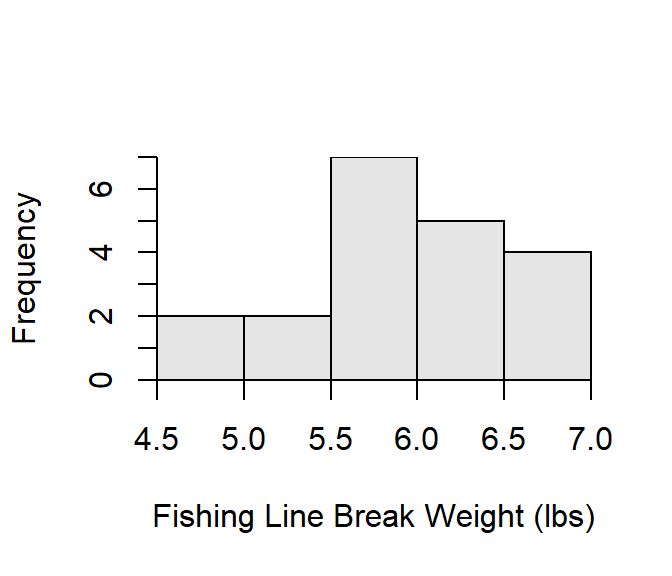
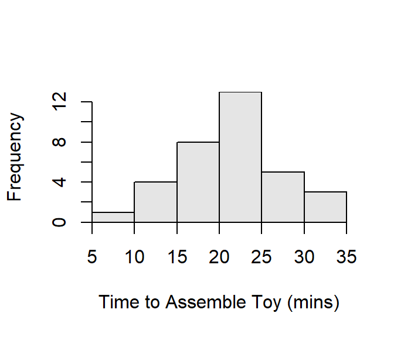
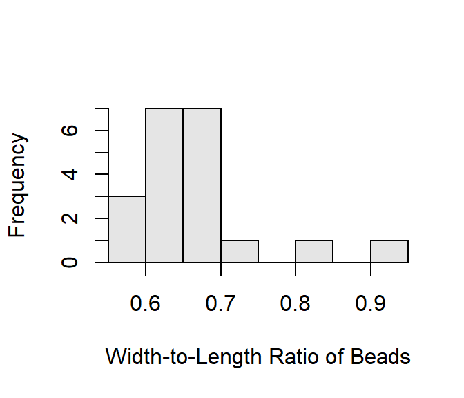

Achievement Test Scores
- α = 0.05.
- H0 μ=80, HA μ>80 where μ is the average achievement test score for all students at the superintendent’s school.
- A one-sample t-test is required because (i) a quantitative variable (achievement test score), (ii) individuals are from one group/population (one school), and (iii) σ is UNknown.
- An observational study with randomly selected subjects was used.
- The σ is unknown and n=32&ge15 and the sample distribution is not strongly skewed as suggested by the mean and median being approximately equal (Note that I would have preferred to have a histogram to look at).
- The statistic is x̄ = 83.2.
- The test statistic is t=\(\frac{83.2-80}{\frac{5.5}{\sqrt{32}}}\) = 3.291 with 32-1 = 31 df.
- The p-value is 0.0012.
- The H0 is rejected because the p-value < α.
- It appears that the mean achievement score of all students at the superintendent’s school is greater than 80 points.
- One is 95% confident that the mean achievement score for all students at the superintendent’s school is greater than 83.2-1.696 \(\frac{5.5}{\sqrt{32}}\)=81.46 points, which further supports that the mean achievement score is greater than 80.
R Appendix
( pval <- distrib(3.291,distrib="t",df=31,lower.tail=FALSE) )
( tstar <- distrib(0.95,distrib="t",type="q",df=31,lower.tail=FALSE) )
Salaries of College Graduates
- α = 0.10.
- H0 μ = 32, HA μ > 32 where μ is the mean salary in 1000s of dollars.
- A one-sample t-test is required because (i) a quantitative variable (salary) was measured, (ii) individuals are from one group/population (Northwestern University), and (iii) σ is UNknown.
- An observational study with apparent random selection of individuals (background says “random surveys”) was used.
- The σ is unknown and n=42≥40; thus, the sampling distribution of the test statistic should follow a t-distribution.
- The statistic is x̄ = 32.511.
- The test statistic is t=\(\frac{32.511-32}{\frac{1.713}{\sqrt{42}}}\) = 1.933 with 42-1 = 41 df.
- The p-value is 0.0301.
- The H0 is rejected because the p-value < α.
- It appears that the average salary for all recent graduates from the College of Liberal Arts is greater than $32,000; thus, the Dean’s statement is supported.
- One is 90% confident that the mean salary for all recent graduates from the College of Liberal Arts is greater than 32.511-1.303 \(\frac{1.713}{\sqrt{42}}\)=$32,167, which further supports that the mean is greater than $32000.
R Appendix
( pval <- distrib(1.933,distrib="t",df=41,lower.tail=FALSE) )
( tstar <- distrib(0.90,distrib="t",type="q",df=41,lower.tail=FALSE) )
Fishing Line Strength
- α = 0.10.
- H0 μ = 6, HA μ < 6 where μ is the mean breaking weight of the fishing line.
- A one-sample t-test is required because (i) a quantitative variable (breaking weight) was measured, (ii) individuals are from one group/population (one type of line), and (iii) σ is UNknown.
- An experimental study with randomly selected pieces of line was used.
- The σ is unknown. The sample size (=20)≥15 and the histogram suggests that the sample distribution is roughly symmetric (Figure 1). Thus, the assumptions are adequately met and the sampling distribution of the test statistic should follow a t-distribution.
- The statistic is x̄ = 5.89 (Table 1).
- The test statistic is t = -0.841 with 19 df (Table 1).
- The p-value is 0.2054 (Table 1).
- The H0 is not rejected because the p-value > α.
- It does not appear that the line breaks at average pressures less than 6 lbs; the manufacturer’s claim is supported.
- One is 90% confident that the average pressure that the line breaks is less than 6.06lbs, which further supports that the average pressure to break the line is not less than 6 lbs (Table 1).

Figure 1: Histogram of the breaking strength (lbs) of 6-lb fishing line.
Table 1: Results of 1-Sample t-Test for breaking strength (lbs) of 6-lb fishing line.
t = -0.8412, df = 19, p-value = 0.2054
90 percent confidence interval:
-Inf 6.063623
sample estimates:
mean of x
5.89
R Appendix
fl <- read.csv("data/FishingLine.csv")
hist(~lbs,data=fl,xlab="Fishing Line Break Weight (lbs)")
( fl.t <- t.test(fl$lbs,mu=6,alt="less",conf.level=0.90) )
Strawberries Produced
- α = 0.10.
- H0 μ = 12, HA μ < 12 where μ is the mean number of strawberries produced per plant.
- A one-sample t-test is required because (i) a quantitative variable (number of berries) was measured, (ii) individuals are from one group/population (just my strawberries), and (iii) σ is UNknown.
- An observational study with randomly selected individuals was used.
- The σ is unknown and n=50≥40; thus, the sampling distribution of the test statistic should follow a t-distribution.
- The statistic is x̄ = 10.20 (Table 2).
- The test statistic is t = -2.420 with 49 df (Table 2).
- The p-value is 0.0096 (Table 2).
- The H0 is rejected because the p-value < α.
- It appears that the plants produce fewer than 12 berries per plant, on average. The companies claim does not seem to be supported.
- One is 90% confident that the mean number of berries produces is less than 11.17 (Table 2), which further supports that fewer than 12 berries are produced per plant on average.
Table 2: Results of 1-Sample t-Test for number of strawberries produced.
t = -2.4195, df = 49, p-value = 0.009649
90 percent confidence interval:
-Inf 11.16645
sample estimates:
mean of x
10.2
R Appendix
sb <- read.csv("data/Strawberries.csv")
( sb.t <- t.test(sb$berries,mu=12,alt="less",conf.level=0.90) )
Putting Together Toys
- α = 0.10.
- H0 μ = 20, HA μ > 20 where μ is the mean time to put the toy together.
- A one-sample t-test is required because (i) a quantitative variable was measured (time), (ii) individuals are from one group/population (this toy), and (iii) σ is UNknown.
- An observational study with randomly selected individuals was used.
- The σ is unknown and n=34≥15 and the histogram suggests that the sample distribution is roughly symmetric (Figure 2). Thus, the assumptions are adequately met and the sampling distribution of the test statistic should follow a t-distribution.
- The statistic is x̄ = 20.94 (Table 3).
- The test statistic is t = 0.953 with 33 df (Table 3).
- The p-value is 0.1737 (Table 3).
- The H0 is not rejected because the p-value > α.
- It appears that the toy does not take more than 20 minutes, on average, to assemble; thus, this toy should not be rated as “difficult” to assemble.
- One is 90% confident that the mean time to put the toy together is greater than 19.65 minutes (Table 3), further supporting that it does not take more than 20 minutes to put the toy together.

Figure 2: Histogram of the amount of time needed to put a toy together.
Table 3: Results of 1-Sample t-Test for the amount of time needed to put a toy together.
t = 0.9532, df = 33, p-value = 0.1737
90 percent confidence interval:
19.64993 Inf
sample estimates:
mean of x
20.94118
R Appendix
tt <- read.csv("data/ToyTime.csv")
hist(~time,data=tt,xlab="Time to Assemble Toy (mins)")
( tt.t <- t.test(tt$time,mu=20,alt="greater",conf.level=0.90) )
Boat Traffic
- α = 0.05.
- H0 μ = 75, HA μ > 75 where μ is the mean number of boats through the locks.
- A one-sample t-test is required because (i) a quantitative variable (number of boats) was measured, (ii)individuals are from one group/population (Yahara locks), and (iii) σ is UNknown.
- An observational study that is very likely not random was used.
- The σ is unknown and n=92≥40; thus, the assumptions are met and the sampling distribution of the test statistic should follow a t-distribution.
- The statistic is x̄ = 91.35 (Table 4).
- The test statistic is t = 1.835 with 91 df (Table 4).
- The p-value is 0.0349 (Table 4).
- The H0 is rejected because the p-value < α.
- It appears that the mean number of boats through the locks per day during June, July, and August of 2005 is indeed greater than 75.
- In fact, one is 95% confident that the average number of boats through the locks per day during June, July, and August of 2005 is at least 76.54 (Table 4).
Table 4: Results of 1-Sample t-Test for the number of boats on the Yahara locks.
t = 1.8351, df = 91, p-value = 0.03488
95 percent confidence interval:
76.54448 Inf
sample estimates:
mean of x
91.34783
R Appendix
y <- read.csv("data/Yahara.csv")
y1 <- filterD(y,year==2005 & mon>5 & mon<9)
xtabs(~year+mon,data=y1) # A check
( y.t <- t.test(y1$boats.total,mu=75,alt="greater",conf.level=0.95) )
Golden Triangle in Beads?
- α = 0.05.
- H0 μ = 0.618, HA μ ≠ 0.618 where μ is the mean width-to-length ratio of the Shoshoni beads.
- A one-sample t-test is required because (i) a quantitative variable (width-to-length ratio) was measured, (ii) individuals from one group/population (Shoshoni), and (iii) σ is UNknown.
- An observational study that is very likely not random was used.
- The σ is unknown and n=20≥15 and the sample distribution is somewhat right-skewed with minor outliers (Figure 3). The assumptions are marginally met and the sampling distribution of the test statistic will likely follow a t-distribution.
- The statistic is x̄ = 0.66 (Table 5).
- The test statistic is t = 2.055 with 19 df (Table 5).
- The p-value is 0.0539 (Table 5).
- The H0 is not rejected because the p-value > α.
- It appears that the mean width-to-length ratio of the Shoshoni beads is NOT different from 0.618. Thus, it appears that the Shoshoni beads do follow the golden rectangle.
- One is 95% confident that the mean width-to-length ratio of the Shoshoni beads is between 0.62 and 0.70 (Table 5). This further supports`that the mean width-to-length ratio of the Shoshoni beads is NOT different from 0.618.

Figure 3: Histogram of the width-to-length ratio of Shoshoni beads.
Table 5: Results of 1-Sample t-Test for the width-to-length ratio of Shoshoni beads
t = 2.0545, df = 19, p-value = 0.05394
95 percent confidence interval:
0.6172036 0.7037964
sample estimates:
mean of x
0.6605
R Appendix
d <- read.csv("data/shoshoni.csv")
hist(~ratios,data=d,xlab="Width-to-Length Ratio of Beads")
( d.t <- t.test(d$ratios,mu=0.618) )